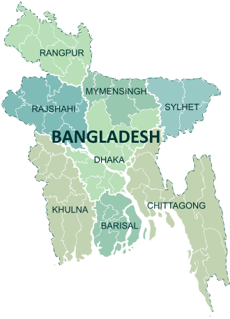

কেন্দ্রীয় কমিটি
SKO-এর সর্বোচ্চ নীতি-নির্ধারণী কমিটি। সংগঠনের নীতি, কর্মসূচি ও সার্বিক সমন্বয় এখান থেকে পরিচালিত হয়।

SKO এবং এর সহযোগী সংগঠনসমূহের কেন্দ্র থেকে তৃণমূল পর্যন্ত সাংগঠনিক বিন্যাস ও কমিটি কাঠামো।

SKO-এর সাংগঠনিক কাঠামো কেন্দ্র থেকে তৃণমূল পর্যন্ত ধাপে ধাপে বিন্যস্ত। প্রতিটি স্তরের কমিটি নিজ নিজ এলাকায় সংগঠনের কার্যক্রম পরিচালনা করে এবং ওপরের স্তরের সঙ্গে সমন্বয় রক্ষা করে।
SKO-এর সর্বোচ্চ নীতি-নির্ধারণী কমিটি। সংগঠনের নীতি, কর্মসূচি ও সার্বিক সমন্বয় এখান থেকে পরিচালিত হয়।
বিভিন্ন শিক্ষক ও কর্মচারী সংগঠন, যারা SKO-এর সঙ্গে ঐক্যবদ্ধ হয়ে যৌথভাবে কাজ করে।
বিভাগ পর্যায়ে সাংগঠনিক কার্যক্রম পরিচালনা এবং জেলা কমিটিগুলোর মধ্যে সমন্বয়।
জেলা পর্যায়ে সদস্য ও কার্যক্রম সমন্বয় এবং উপজেলা/থানা কমিটিগুলোর তত্ত্বাবধান।
উপজেলা বা থানা পর্যায়ে সংগঠন পরিচালনা এবং ইউনিয়ন/ওয়ার্ড কমিটির সঙ্গে সংযোগ রক্ষা।
তৃণমূল পর্যায়ে সদস্যদের সঙ্গে সরাসরি সংযোগ ও সেবা প্রদানের মূল স্তর।
যেকোনো স্তরের কমিটি গঠিত হয় গঠনতন্ত্র অনুযায়ী, গণতান্ত্রিক প্রক্রিয়ায় এবং ওপরের স্তরের অনুমোদনক্রমে।
সংশ্লিষ্ট এলাকার যোগ্য শিক্ষক-কর্মচারীদের সদস্য হিসেবে নিবন্ধন ও যাচাই সম্পন্ন করা হয়।
ওপরের স্তরের কমিটি সাময়িকভাবে আহ্বায়ক কমিটি গঠন করে দেয়।
সদস্যদের অংশগ্রহণে গণতান্ত্রিক পদ্ধতিতে পূর্ণাঙ্গ কমিটি চূড়ান্ত করা হয়।
কমিটির সদস্য-তালিকা ও কাগজপত্র ওপরের স্তরের কমিটির কাছে জমা দিয়ে অনুমোদন নেওয়া হয়।
অনুমোদিত কমিটি আনুষ্ঠানিকভাবে ঘোষিত হয় এবং কমিটির তালিকায় প্রকাশ পায়।
প্রতিটি কমিটিতে সাধারণত নিচের পদগুলো থাকে। পদ অনুযায়ী মূল দায়িত্বগুলো সংক্ষেপে দেওয়া হলো।
প্রতিটি কমিটি গঠনতন্ত্রে নির্ধারিত মেয়াদে দায়িত্ব পালন করে। মেয়াদ শেষে নতুন কমিটি গঠিত হয় এবং পুরোনো কমিটি সাবেক তালিকায় যুক্ত হয়।
মেয়াদ ও নিয়মের চূড়ান্ত বিধান জানতে গঠনতন্ত্র দেখুন। মেয়াদ শেষ হওয়া কমিটির তথ্য পাবেন সাবেক ও মেয়াদোত্তীর্ণ কমিটি পাতায়।